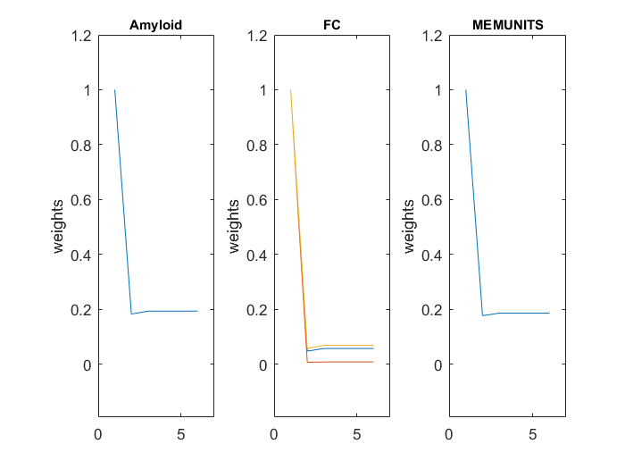
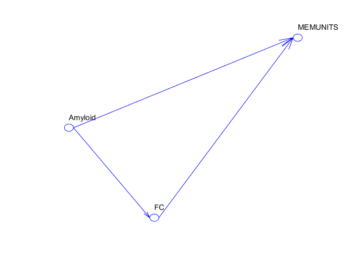

PLS-SEM Report
PLS-SEM toolbox
Author: Massimo Aria
Department of Economics and Statistics
University of Naples Federico II, Italy
email: aria@unina.it
web: http://www.massimoaria.com
PLS-SEM website: http://www.mathworks.com/matlabcentral/fileexchange/54147-plspm-toolbox http://www.massimoaria.com/plssem.html
Contents
Data Information
Observations: 392 Measurement Variables: 5 Latent Constructs: 3 Convergence reached in: 6 iteration(s)
Overall Model Assessment
Absolute indices
Standardized Root Mean Square Residual (SRMR)
SRMR Baseline Model: 0.1429 Composite Model: 0.1514 Factor Model: 0.0085 Overall Assessment is reached if: SRMR < 0.080
Relative Indices
Indices of Tucker and Lewis (TLI) and Bentler and Bonett (NFI)
TLI NFI Composite Model: -0.7635 -0.5382 Factor Model: 1.1720 0.9955
Measurement Model
Model Definition
Type_of_Measurement_Model Indicators
_________________________ __________
Amyloid 'Single Indicator' 1
FC 'Factor (Mode A)' 3
MEMUNITS 'Single Indicator' 1
Design Matrix of Measurement Model
Amyloid FC MEMUNITS
_______ __ ________
Amy 1 0 0
IC6IC8 0 1 0
IC9IC13 0 1 0
IC6IC20 0 1 0
Memory 0 0 1
Construct Reliability
Construct Cronbach Alpha Dillon-Goldstein rho Dijkstra-Henseler rho Amyloid 1.0000 1.0000 1.0000 FC 0.0014 0.5177 -0.1416 MEMUNITS 1.0000 1.0000 1.0000 Construct Reliability is satisfied if: Cronbach Alpha > 0.7000 Dillon-Goldstein rho > 0.7000 Dijkstra-Henseler rho > 0.7000
Convergence Validity
Average Variability Explained (AVE)
Construct AVE Amyloid 1.0000 FC 0.3128 MEMUNITS 1.0000 Covergence Validity is satisfied if: AVE > 0.5000
Discriminant Validity
Heterotrait-Monotrait Ratio of Correlations(HTMT)
Amyloid FC MEMUNITS
_______ ______ ________
Amyloid 0 0 0
FC 4.1188 0 0
MEMUNITS 0.3971 5.1969 0
Discriminant Validity is satisfied if:
HTMT ratio significantly smaller than 1 (generally < 0.9000)
Fornell-Larcker Criterion
N Amyloid FC MEMUNITS AVE FL_criterion
_ _______ ______ ________ ______ ____________
Amyloid 1 0 0.0353 0.1577 1 'Satisfied'
FC 2 0 0 0.0568 0.3128 'Satisfied'
MEMUNITS 3 0 0 0 1 'Satisfied'
Discriminant Validity is satisfied if:
AVE is higher than squared correlations
Loadings
Amyloid FC MEMUNITS
_______ ______ ________
Amy 1 0 0
IC6IC8 0 0.6054 0
IC9IC13 0 0.139 0
IC6IC20 0 0.7433 0
Memory 0 0 1
Weights
Weghting scheme: path
Amyloid FC MEMUNITS
_______ ______ ________
Amy 1 0 0
IC6IC8 0 0.6587 0
IC9IC13 0 0.0879 0
IC6IC20 0 0.7924 0
Memory 0 0 1
Evolution of the weights along the iterations Cross Loadings
Amyloid FC MEMUNITS
_______ _______ ________
Amy 1 0.1878 -0.3971
IC6IC8 0.1304 0.6054 -0.1352
IC9IC13 0.0138 0.139 -0.0209
IC6IC20 0.1271 0.7433 -0.1861
Memory -0.3971 -0.2384 1
Indicator Multicollinearity
Variance Inflaction Factor (VIF)
Amyloid FC MEMUNITS
_______ ______ ________
Amy 1 0 0
IC6IC8 0 1.011 0
IC9IC13 0 1.0053 0
IC6IC20 0 1.0058 0
Memory 0 0 1
Structural Model
Path Design Matrix
Amyloid FC MEMUNITS
_______ __ ________
Amyloid 0 1 1
FC 0 0 1
MEMUNITS 0 0 0
Path graph
R-Squared
Construct R2 R2adj Amyloid 0.0000 0.0000 FC 0.0353 0.0328 MEMUNITS 0.1855 0.1813
Path Coefficients
Amyloid FC MEMUNITS
_______ ______ ________
Amyloid 0 0.1878 -0.3652
FC 0 0 -0.1698
MEMUNITS 0 0 0
Total Effects
Amyloid FC MEMUNITS
_______ ______ ________
Amyloid 0 0.1878 -0.3652
FC 0 0 -0.1698
MEMUNITS 0 0 0
Indirect Effects
Amyloid FC MEMUNITS
_______ __ ________
Amyloid 0 0 0
FC 0 0 0
MEMUNITS 0 0 0
Effect Overview
Path_Coefficient Indirect_Effect Total_Effect
________________ _______________ ____________
Amyloid->FC 0.1878 0 0.1878
Amyloid->MEMUNITS -0.3652 0 -0.3652
FC->MEMUNITS -0.1698 0 -0.1698
Inter-Construct Correlations
Amyloid FC MEMUNITS
_______ _______ ________
Amyloid 1 0 0
FC 0.1878 1 0
MEMUNITS -0.3971 -0.2384 1
Diagnostics
Empirical Correlation Matrix
Amy IC6IC8 IC9IC13 IC6IC20 Memory
_______ _______ _______ _______ _______
Amy 1 0.1304 0.0138 0.1271 -0.3971
IC6IC8 0.1304 1 0.0718 -0.0752 -0.1352
IC9IC13 0.0138 0.0718 1 0.0048 -0.0209
IC6IC20 0.1271 -0.0752 0.0048 1 -0.1861
Memory -0.3971 -0.1352 -0.0209 -0.1861 1
Baseline Model Correlation Matrix
Amy IC6IC8 IC9IC13 IC6IC20 Memory
___ ______ _______ _______ ______
Amy 1 0 0 0 0
IC6IC8 0 1 0 0 0
IC9IC13 0 0 1 0 0
IC6IC20 0 0 0 1 0
Memory 0 0 0 0 1
Composite Model Correlation Matrix
Amy IC6IC8 IC9IC13 IC6IC20 Memory
_______ _______ _______ _______ _______
Amy 1 0.1137 0.0261 0.1396 -0.3971
IC6IC8 0.1137 1 0.0841 0.45 -0.1443
IC9IC13 0.0261 0.0841 1 0.1033 -0.0331
IC6IC20 0.1396 0.45 0.1033 1 -0.1772
Memory -0.3971 -0.1443 -0.0331 -0.1772 1
Factor Model Correlation Matrix
Amy IC6IC8 IC9IC13 IC6IC20 Memory
_______ _______ _______ _______ _______
Amy 1 0.1137 0.0261 0.1396 -0.3971
IC6IC8 0.1137 1 0.0718 -0.0752 -0.1443
IC9IC13 0.0261 0.0718 1 0.0048 -0.0331
IC6IC20 0.1396 -0.0752 0.0048 1 -0.1772
Memory -0.3971 -0.1443 -0.0331 -0.1772 1
Scores
Standardized Construct Scores
Amyloid FC MEMUNITS
_______ _______ ________
-0.5731 -0.5698 0.9852
-0.8069 0.3077 -0.6443
-0.7218 1.9097 0.442
-0.8621 1.7219 0.8041
-0.5887 -0.3724 -0.4633
-0.681 -0.4173 1.5283
-0.5599 1.6321 0.261
-0.7542 -1.1755 0.9852
-0.2781 1.1796 -0.1011
2.2856 -0.5444 -1.5496
-0.2961 -0.2153 0.0799
-0.6714 -0.7022 -0.6443
1.8947 0.2198 -2.0927
-0.6139 -1.6663 0.8041
-0.6606 -0.4571 0.8041
-0.5839 -0.8057 0.261
1.5661 0.5273 -2.0927
-0.5083 -1.1413 -0.2822
-0.5623 -0.0124 0.6231
-0.4172 -2.2324 0.6231
-0.5983 0.9962 -1.3685
-0.422 -0.9584 0.442
-0.9856 -1.9372 1.1662
-0.6882 0.2863 -1.5496
-0.7506 -0.0194 -0.4633
-0.6378 0.5626 -0.1011
-0.2889 -0.7025 0.261
2.8924 -0.0785 -2.0927
-0.916 -0.5081 1.1662
0.5493 0.3776 1.3473
2.0002 0.8678 -2.0927
-0.4927 -1.6533 -0.6443
-0.7134 -0.8531 0.8041
-0.7841 -2.1152 0.0799
-0.1954 -0.2386 -1.5496
-0.6738 -0.1131 1.1662
1.1848 0.211 -0.1011
-0.6798 -0.2035 0.9852
-0.8705 -1.6996 0.9852
-0.6139 0.4416 -0.8254
-0.6606 -0.4009 -0.1011
-0.4628 0.3088 -1.1875
1.0757 -0.963 -0.6443
-0.8285 -0.5687 1.3473
-0.7553 -0.16 -0.4633
1.1237 1.9315 -0.1011
-0.7026 -1.4271 -0.4633
3.131 1.1631 1.3473
-0.5887 -0.7619 -0.6443
-0.5959 -1.2177 1.1662
-0.699 0.7717 0.261
0.0109 1.1187 -0.2822
0.5529 1.996 0.8041
-0.6091 -0.9537 -0.1011
0.2315 0.5095 1.1662
-0.8273 -0.9064 -0.1011
-0.3512 0.0136 -0.1011
-0.669 0.496 -0.4633
0.355 1.2836 0.261
-0.6702 -0.3963 -0.8254
0.7951 -0.6546 -1.0064
-0.4244 0.0817 0.8041
-1.2314 -0.0935 0.0799
-0.9868 -0.7987 0.0799
-0.6702 0.0859 -0.2822
1.0121 0.4391 0.6231
-0.9196 -0.6271 0.442
-0.5119 1.1854 0.442
0.3442 0.8672 0.8041
0.6836 -0.4407 0.442
2.0062 1.4165 -1.9117
2.3623 0.6433 -2.0927
1.5541 -0.6835 -1.0064
0.8107 1.5679 -2.0927
2.1825 0.0042 -0.2822
-0.7014 -0.085 -1.0064
-0.6774 1.4294 -1.3685
-0.7302 0.3295 0.442
-0.6067 0.1911 -0.6443
-0.5599 1.5247 0.261
-0.7482 -0.1888 0.0799
-0.5527 0.7339 0.8041
0.2507 -1.2652 0.9852
-0.5959 -0.2536 -0.4633
-0.1618 -0.817 0.442
-0.6546 -0.0986 1.7094
1.0841 -0.0734 -0.8254
-0.6007 -0.1302 0.442
0.5025 -0.7608 -2.0927
-0.8932 -0.6822 0.442
2.5662 0.6954 -2.0927
-0.4832 0.2777 0.6231
-0.6618 -0.6352 0.9852
-0.5155 1.4223 0.261
2.1153 1.2932 -0.2822
-0.5695 0.0117 -1.1875
0.1032 0.2481 0.9852
-0.3297 0.2497 -0.2822
-0.7625 0.2684 -0.1011
-0.8093 0.7369 -0.8254
-0.7362 0.4636 0.261
-0.6139 1.2824 0.261
-0.6414 0.6263 1.1662
2.5794 -0.0416 1.3473
0.7507 -0.1667 0.6231
-0.3884 0.5779 1.7094
1.6669 -2.2639 0.8041
-0.4532 0.0044 0.6231
0.5517 -0.2723 -1.3685
-0.5971 -0.8434 0.9852
1.6549 -0.2061 -2.0927
-0.3956 1.208 -1.9117
0.2747 0.2601 0.0799
-0.9928 1.3329 -0.1011
0.6932 -0.6034 -0.4633
-0.7338 1.1715 0.8041
-1.1726 0.0562 0.9852
-1.0012 -0.4752 -0.2822
-0.6198 -0.7899 0.9852
0.8694 -0.1381 -1.1875
-0.7014 -0.4214 1.3473
0.7927 0.5113 -0.6443
0.4126 -0.1109 0.261
0.3274 1.3129 1.1662
-0.0934 0.6063 0.8041
1.2088 0.4435 -2.0927
-0.6414 0.6463 0.0799
-0.0119 -0.3014 -1.9117
-0.7158 2.2882 -0.6443
-0.6139 2.077 -0.6443
-0.5359 1.2039 1.3473
2.6945 0.4232 0.261
-0.8968 -2.1745 1.7094
-0.2673 -0.1393 2.2525
1.5649 -0.2973 -1.1875
-0.9736 1.1876 0.9852
-0.4268 0.215 0.442
0.9522 0.2 -2.0927
-0.7038 -0.8783 1.1662
-1 0.2741 0.9852
0.1284 1.1532 -2.0927
-0.7014 -0.3924 0.261
0.9246 0.1731 0.261
0.0013 -0.2698 0.6231
0.8059 -0.4023 0.6231
1.15 0.3021 0.442
0.5637 0.1479 1.5283
-0.6139 -0.3382 0.0799
0.7423 -0.4111 1.3473
-0.2181 0.1928 -0.4633
-0.627 -0.0289 -0.8254
1.1357 2.213 -0.1011
3.1681 1.7966 -2.0927
0.975 0.7731 0.6231
1.1668 0.7619 -0.4633
-0.6055 -0.0171 -1.7306
-0.7134 -1.1739 1.8904
-0.6534 0.7646 -0.1011
-0.6882 -0.0277 0.0799
-0.8189 -0.2899 -0.1011
1.2316 -1.617 0.9852
4.6119 0.9457 -2.0927
-0.6103 -1.3256 0.8041
0.8227 0.9102 -2.0927
-0.4208 -0.2534 -0.1011
-0.7266 1.7184 0.9852
0.993 -0.492 -0.2822
0.5637 -0.52 1.5283
-0.6606 0.8651 0.8041
0.2963 -0.1514 -2.0927
0.8371 0.5876 -0.6443
-0.8932 -0.7664 -0.6443
-0.8681 -1.1852 1.1662
0.3298 -1.2037 1.5283
0.1572 -0.7933 -1.5496
-0.657 -1.5706 0.261
-0.7038 0.3561 -0.2822
-1.0947 0.387 0.261
0.1812 -0.7599 1.3473
1.4462 1.6982 -1.0064
-0.6642 0.4392 1.1662
2.0446 0.6713 -1.5496
-0.4376 0.5381 0.9852
0.7483 0.6355 -0.4633
0.4665 -0.1232 -2.0927
1.5889 0.2117 1.3473
1.6896 -0.2152 -2.0927
-0.6726 -0.1218 1.1662
1.252 0.0059 0.442
-0.6426 0.1091 0.261
2.0134 1.1879 -0.1011
-0.4184 0.9236 1.5283
-0.645 -0.4967 0.9852
-0.6198 0.5189 -0.2822
-0.6426 -1.3207 0.442
1.0625 0.8208 -1.5496
1.1033 0.5605 -1.5496
0.0648 0.4771 0.442
1.3887 -1.1186 -1.0064
-0.687 1.1394 -0.4633
-0.6306 -0.4838 0.442
-0.3069 -0.1518 0.442
-0.5539 1.8208 0.8041
-0.7326 0.1265 0.442
-0.2122 0.482 -0.4633
2.6765 0.5925 -1.1875
-0.5587 -3.4209 0.8041
-0.645 -0.1545 0.442
2.4499 0.4151 -1.7306
2.2868 0.091 -2.0927
0.0996 0.1182 0.442
-0.699 0.5242 0.6231
-0.6966 0.4435 -0.6443
-0.5767 -0.4568 0.0799
-0.693 -0.1593 0.8041
-0.6151 0.5516 0.8041
-0.7589 -1.5971 -1.0064
0.4042 -0.4628 0.6231
0.5013 0.2174 -0.1011
-0.4364 -0.8483 0.8041
1.4882 1.0717 -0.8254
-0.687 0.8797 -2.0927
-0.2265 -1.4807 0.261
1.8359 -0.547 -0.2822
-0.6534 0.5987 1.1662
-0.7266 1.2357 -0.1011
1.3383 0.2758 -0.4633
-0.675 -2.1622 1.3473
-0.7098 -1.5455 0.6231
1.0913 -0.1567 0.6231
-0.8597 -0.1877 0.8041
0.4102 -0.4356 0.0799
-0.6918 -1.099 -0.2822
-0.6103 -1.1488 0.6231
-1.0192 -0.3318 -0.2822
1.7652 0.1467 -1.1875
0.4653 -2.1688 0.0799
0.1608 -1.6067 0.9852
-0.6378 -0.7641 1.1662
-0.6486 1.6652 -0.2822
-0.8141 1.8423 0.9852
-0.6726 -1.8661 0.6231
0.9894 -0.0633 -1.5496
-0.8585 -1.0388 -0.8254
0.8994 -0.0872 1.7094
-0.7781 -0.204 0.261
-0.693 -0.8765 0.6231
0.9306 -1.6447 0.6231
-0.5407 0.9303 -1.1875
-0.747 0.1012 -0.2822
-0.964 -0.856 0.6231
-0.7494 -0.0062 -0.4633
-0.5227 0.6035 -0.4633
-0.8573 -0.3794 0.442
1.0925 0.5336 -2.0927
-0.8273 1.2602 0.0799
-0.482 -1.1312 0.261
1.5637 0.2669 -2.0927
2.872 1.0936 -0.1011
-0.5791 0.5963 1.5283
0.5625 -0.2412 -0.4633
-0.3453 -1.0237 0.9852
-0.7769 1.0664 0.261
-0.5587 -0.9763 -0.1011
-0.9796 -0.1412 0.0799
0.9054 -0.2033 0.0799
-0.7302 0.5847 0.8041
0.5313 2.4305 -1.7306
0.9798 -0.1966 0.6231
-0.5887 -0.6045 -0.1011
-0.7817 0.0171 0.8041
-0.705 0.0876 1.8904
0.6428 2.4496 -2.0927
-0.747 -1.6849 -0.4633
-0.6906 -0.2677 1.1662
-0.9316 -1.7113 1.3473
-0.8165 -1.6849 0.8041
2.2065 0.8222 0.8041
0.5385 -1.648 -1.5496
-0.3644 1.1907 0.6231
-0.3608 -1.0937 -0.8254
-0.5683 -3.3111 0.6231
-0.6738 0.8399 0.6231
-0.7062 -0.4493 -0.6443
0.4534 1.1301 0.261
-0.5959 -0.3109 1.5283
1.8036 0.7082 -0.6443
-1.0024 0.3153 -1.7306
-0.7661 -0.4753 0.8041
-0.7506 0.6773 -0.8254
-0.6774 0.6444 -0.1011
-0.1642 0.8039 -0.2822
-0.5359 0.4271 -0.1011
0.8455 0.4946 0.9852
-0.669 0.9632 1.1662
-0.0179 -1.2187 0.6231
-0.6258 0.7618 0.442
-0.5023 0.0005 0.0799
0.6812 -0.6737 -1.3685
0.8802 0.9787 -0.1011
1.7748 0.1052 0.261
-0.6115 -0.0698 0.261
1.18 -0.3051 -1.0064
-0.8069 0.2601 -0.2822
-0.2757 1.3814 0.0799
-0.7338 -0.9538 0.0799
-0.6714 0.5784 -0.1011
0.957 0.0597 0.6231
-0.0239 0.6157 0.261
0.078 -0.7107 -0.6443
1.3947 0.9162 -2.0927
-0.3393 0.8182 -0.1011
-0.0203 -1.9575 -0.6443
1.0985 1.3107 0.8041
0.7052 0.4932 -0.6443
-0.5443 -0.36 0.6231
-0.7182 -0.4368 -0.1011
-0.7014 -2.7498 0.442
-0.8045 -0.2718 -0.1011
-0.0503 -1.3917 0.442
0.4354 -0.1929 1.1662
-0.8225 0.606 -0.1011
-0.9196 0.0257 -0.2822
-0.904 0.4369 0.8041
0.6764 2.3394 0.442
-0.5947 -0.1065 -0.2822
0.5217 0.5026 -0.6443
-0.7997 -1.4806 1.3473
1.4234 -1.9977 0.9852
-0.3956 1.6105 -1.5496
-0.747 2.2038 -0.2822
-0.693 0.8982 1.5283
-0.6139 0.0861 0.0799
-0.5023 1.1876 0.261
-0.2265 -0.7541 1.1662
-0.6462 -1.1262 1.1662
0.8694 -0.4786 -1.7306
-0.675 0.5497 -0.8254
1.6225 -0.898 -0.6443
0.0157 -0.8851 1.1662
1.2771 0.5167 -1.7306
1.722 1.2283 -0.2822
0.385 -0.0112 0.261
0.1356 0.5037 0.442
-0.5755 -0.1883 -1.9117
2.2137 0.9213 -1.0064
-0.6474 -0.3283 0.6231
2.2125 0.0921 -1.0064
0.6236 0.0945 -0.6443
-0.6306 0.4235 1.1662
-0.6402 -0.0418 0.0799
-0.7434 1.3142 -0.8254
-0.8513 -4.7715 0.442
1.0073 0.4577 0.0799
0.5169 -0.0365 -0.4633
-0.7805 -0.2066 0.9852
-0.9244 -0.6746 -0.6443
-0.5575 -0.5213 0.0799
1.1512 0.7142 -1.5496
-0.6954 -0.3953 1.3473
-0.747 -1.0077 0.8041
-0.5851 0.5274 0.9852
2.6226 -1.206 -0.4633
-0.7745 -0.2064 0.8041
-0.6522 -0.5946 0.442
-0.1582 -2.7127 -0.1011
-0.633 -1.0656 0.261
-0.7661 0.4137 0.8041
-0.8417 -0.9434 1.1662
-0.4292 0.6378 -0.2822
-0.1954 0.2741 0.261
-0.8621 0.1349 0.261
-0.4208 1.2291 -1.3685
2.9295 0.6728 -0.6443
-0.621 -1.8537 1.7094
-0.211 -1.3265 0.442
-0.5071 -0.2637 0.8041
-0.6534 0.7415 -0.2822
-0.8057 -0.0507 0.261
-0.916 1.3118 -1.1875
0.9162 0.3819 -1.9117
2.3096 2.2261 -2.0927
0.4258 -0.7076 -1.7306
-1.1043 -0.065 -0.4633
-0.7733 -0.0962 -0.1011
-0.1858 1.3263 0.261
-0.5323 0.1179 0.9852
-0.6342 -0.3414 2.2525
-0.6762 -0.3391 -0.1011
-0.6474 0.6012 0.0799
1.4114 0.4208 0.6231
-0.7781 0.4253 0.6231
Bootstrap
Bootstrap replications: 5000 Confidence Interval procedure: studentized Confidence Interval level: 0.95 Bias: bias-corrected
Direct Effects Inference (Path Coefficients)
Sample_estim Boot_estim Bias t_stat Pvalue CI_LB CI_UB
____________ __________ ______ ______ ______ ______ ______
Amyloid->FC 0.188 0.193 -0.005 4.177 0 0.092 0.27
Amyloid->MEMUNITS -0.365 -0.363 -0.002 -7.461 0 -0.468 -0.276
FC->MEMUNITS -0.17 -0.175 0.005 -4.013 0 -0.244 -0.078
Loadings
Sample_estim Boot_estim Bias t_stat Pvalue CI_LB CI_UB
____________ __________ _____ ______ ______ ______ _____
Amy 1 1 0 Inf 0 1 1
IC6IC8 0.605 0.577 0.028 3.252 0.001 0.361 1.09
IC9IC13 0.139 0.116 0.023 0.599 0.275 -0.235 0.669
IC6IC20 0.743 0.708 0.036 4.997 0 0.578 1.148
Memory 1 1 0 Inf 0 1 1
Weights
Sample_estim Boot_estim Bias t_stat Pvalue CI_LB CI_UB
____________ __________ _____ ______ ______ ______ _____
Amy 1 1 0 Inf 0 1 1
IC6IC8 0.659 0.629 0.03 3.979 0 0.437 1.081
IC9IC13 0.088 0.071 0.017 0.419 0.338 -0.266 0.543
IC6IC20 0.792 0.751 0.041 5.551 0 0.648 1.19
Memory 1 1 0 Inf 0 1 1